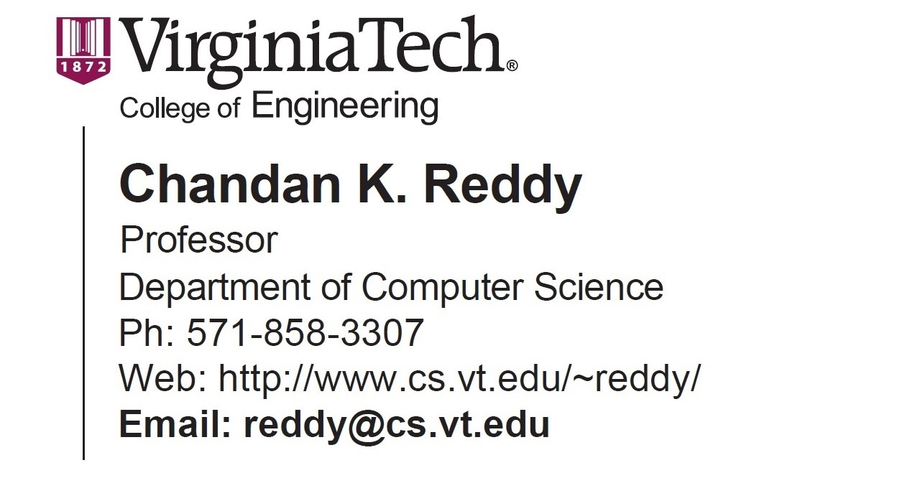

Chandan Reddy
 |
 |
Short Bio
Chandan Reddy is a Professor in the Department of Computer Science at Virginia Tech. He received his Ph.D. from Cornell University and M.S. from Michigan State University. His primary research interests are Machine Learning and Natural Language Processing with applications to Healthcare, Software, Transportation, and E-commerce. His research has been funded by NSF, NIH, DOE, DOT, and various industries. He has published over 200 peer-reviewed articles in leading conferences and journals. He received several awards for his research work including the Best Application Paper Award at ACM SIGKDD conference in 2010, Best Poster Award at IEEE VAST conference in 2014, Best Student Paper Award at IEEE ICDM conference in 2016, and was a finalist of the INFORMS Franz Edelman Award Competition in 2011. He is serving on the editorial boards of ACM TKDD, ACM TIST, and IEEE Big Data journals. He is a senior member of the IEEE and distinguished member of the ACM.
Preprints on Arxiv
- LLM-SRBench: A New Benchmark for Scientific Equation Discovery with Large Language Models
- Reasoning Towards Fairness: Mitigating Bias in Language Models through Reasoning-Guided Fine-Tuning
- LLM-FE: Automated Feature Engineering for Tabular Data with LLMs as Evolutionary Optimizers
- Mitigating selection bias with node pruning and auxiliary options
- Knowledge Graph Enhanced Language Agents for Recommendation
- Context-Aware Clustering using Large Language Models
Selected Recent Publications [ Complete List ] [ Google Scholar ]
- LLM-SR: Scientific equation discovery via programming with large language models, ICLR 2025
- Towards Scientific Discovery with Generative AI: Progress, Opportunities, and Challenges, AAAI 2025
- Evolutionary Large Language Model for Automated Feature Transformation, AAAI 2025
- H-STAR: LLM-driven Hybrid SQL-Text Adaptive Reasoning on Tables, NAACL 2025
- SNIP: Bridging Mathematical Symbolic and Numeric Realms with Unified Pre-training, ICLR 2024
- ViSAGe: A Global-Scale Analysis of Visual Stereotypes in Text-to-Image Generation, ACL 2024
- StructCoder: Structure-Aware Transformer for Code Generation, TKDD 2024
- Multi-Label Clinical Time-Series Generation via Conditional GAN, TKDE 2024
- Transformer-based Planning for Symbolic Regression, NeurIPS 2023
- Hyperbolic Graph Neural Networks at Scale: A Meta Learning Approach, NeurIPS 2023
- Towards Semi-Structured Automatic ICD Coding via Tree-based Contrastive Learning, NeurIPS 2023
- SeeGULL: A Stereotype Benchmark with Broad Geo-Cultural Coverage Leveraging Generative Models, ACL 2023
- Supervised Contrastive Learning for Interpretable Long-form Document Matching, TKDD 2023
- Execution-based Code Generation using Deep Reinforcement Learning, TMLR 2023
- Graph-based Multi-ODE Neural Networks for Spatio-Temporal Traffic Forecasting, TMLR 2023
- CodeAttack: Code-based Adversarial Attacks for Pre-Trained Programming Language Models, AAAI 2023
- Multilingual Code Snippets Training for Program Translation, AAAI 2022
- Self-Supervised Transformer for Sparse and Irregularly Sampled Multivariate Clinical Time-Series, TKDD 2022
- Probabilistic Entity Representation Model for Reasoning over Knowledge Graphs, NeurIPS 2021
- Self-Supervised Learning of Contextual Embeddings for Link Prediction in Heterogeneous Networks, WWW 2021
- Self-Supervised Hyperboloid Representations from Logical Queries over Knowledge Graphs, WWW 2021
- Collaborative Graph Learning with Auxiliary Text for Temporal Event Prediction in Healthcare, IJCAI 2021
- A Simple and Effective Self-Supervised Contrastive Learning Framework for Aspect Detection, AAAI 2021
- Question Answering with Long Multiple-Span Answers, EMNLP 2020
- LATTE: Latent Type Modeling for Biomedical Entity Linking, AAAI 2020
- Text-to-SQL Generation for Question Answering on Electronic Medical Records, WWW 2020